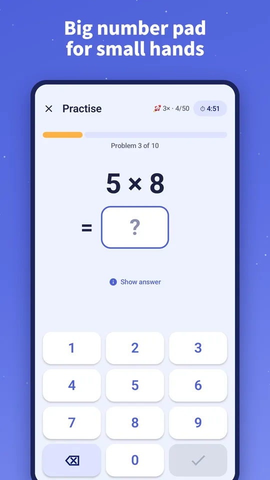
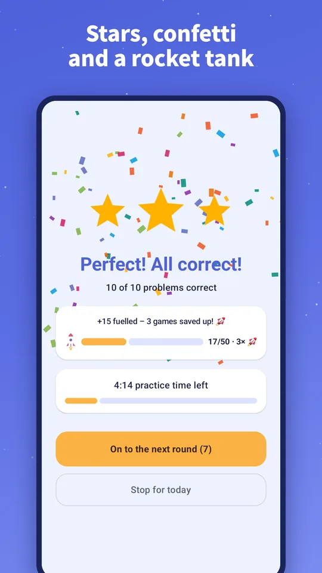
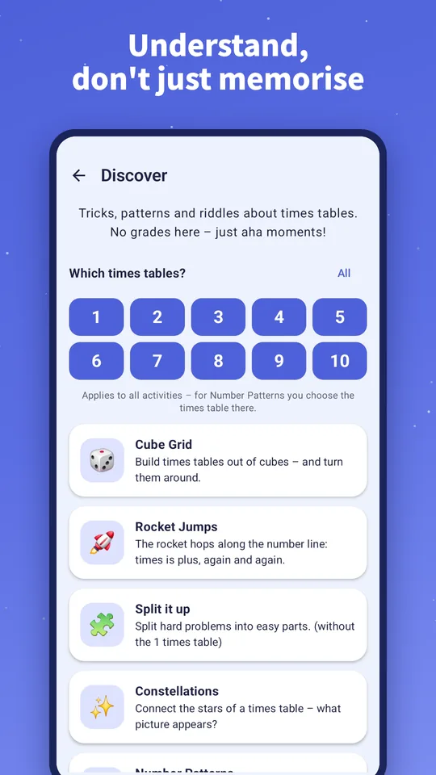

Closed test
Testers wanted!
The 1×1 Trainer is almost ready for the Play Store. Before that, Google requires at least 12 testers to try it for 14 days. Help out – it takes two minutes and is free.
- Join the tester group Sign in to Google – with the account used on your Android phone – and tap “Join group”. Open Google group
- Accept the test and install Tap “Become a tester”, then get the app from the Play Store. Open test link
- Keep it installed for 14 days Using it now and then helps – and feedback is very welcome.
Currently available in Germany, Austria and Switzerland only. Questions or feedback: cood.s@gmx.de
Why this app exists
I originally built the 1×1 Trainer for my own children. The times tables matter and need to stick – but I was missing the overview: Which tables do the kids already know? Where are they still struggling?
That led to the idea: the app keeps track of every fact and brings back exactly the ones that are still hard, again and again – until they’re solid. And ideally, it’s fun along the way.
Over time it grew into a real app that I’d now like to share with other families. I keep developing it in my spare time and feedback and ideas are very welcome.
A look inside







← swipe →
What it does
Practise & review
Pick any tables from 1 to 10 and set a goal in rounds or minutes. Facts that aren’t solid yet come back on purpose.
Speed round
60 seconds, as many facts as possible – and beat your own record.
Discover
Seven learning elements such as dot arrays, rocket jumps and splitting show how multiplication works.
Rocket tank & mini games
Correct answers fill the tank. When it’s full, kids can play Rocket Flight, Alien Pop or Moon Hopper.
Progress & calendar
All 100 facts at a glance plus a calendar showing practice time per day.
For parents
Several children, PIN-protected parent area, adjustable settings, German and English, phone and tablet.
Questions from parents
What age is the app for?
For children who are learning or consolidating the times tables up to 10 × 10 – usually aged 7 to 10. Older kids who still struggle with some tables benefit too.
How does the app make hard facts stick?
For each of the 100 facts the app remembers the last five attempts. Facts that aren’t solid yet go into “Review” and keep coming back until they stick. A wrong answer reappears just a few questions later. 3 × 7 and 7 × 3 are counted separately. Parents decide how strict the app should be.
Can I see how my child is doing?
Yes. “My progress” shows all 100 facts in colour: solid, almost solid or still practising. There is also a calendar with practice time per day. The parent area has the calendar for every child.
How much does it cost?
During testing the app is free, with no ads and no purchases. Later a free basic version is planned, plus a one-time purchase for the full range – no subscription, no ads. Anyone who installs it before then keeps everything.
Is there an iPhone version?
No, currently Android only (Android 7 or later), on phones and tablets, in portrait and landscape.
Can several children use the app?
Yes. Each child has their own profile and progress, with an optional photo. No account or email address is needed.
Don’t the mini games distract from practising?
A mini game is only unlocked once correct answers have filled the rocket tank – roughly every four to five rounds. A game lasts less than a minute. Parents can switch mini games off completely in the parent area.
Does the app need the internet?
No. The app has no internet access at all. All data stays on the device; there is no tracking and no advertising.
Privacy
The app needs no internet and has no access to it. No ads, no tracking, no account – all data stays on the device. This website sets no cookies and loads nothing from third parties either.